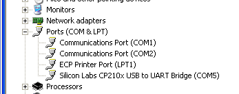

by Dan Peirce B.Sc.
Reformatted from Dokuwiki
As far as I recall when I used the bridge with with a windows 7 computer the driver installed automatically. When used with my home xp computer I had to install a driver (to get the correct driver installed). The correct driver can be found here. If you unzip the compressed file you will find an install file. Run the install file without the device attached to the USB.
http://www.silabs.com/Support%20Documents/Software/CP210x_VCP_Windows.zip
The link above should download the file. If they change the file name the link will break. In that case try the tools tab of http://www.silabs.com/products/interface/usbtouart/Pages/usb-to-uart-bridge.aspx
This should bring up a list. One needs to select the correct operating
system, VCP (Virtual COM Port) and the part CP2102 (or CP210x).
After doing the install and then attaching the bridge to the USB port the "Silicaon Labs CP210x USB to UART Bridge" line showed up in the device manager:
